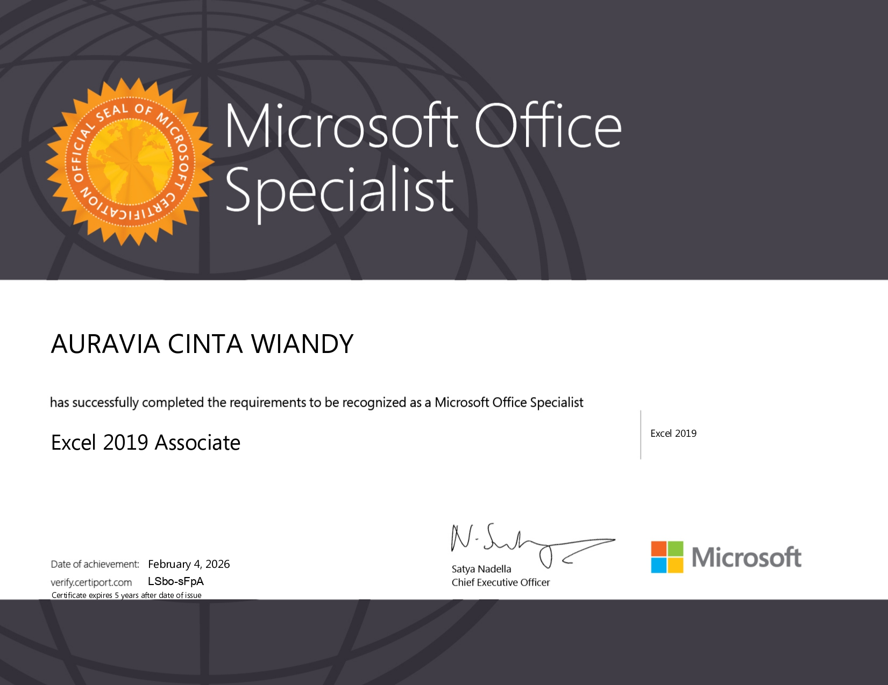
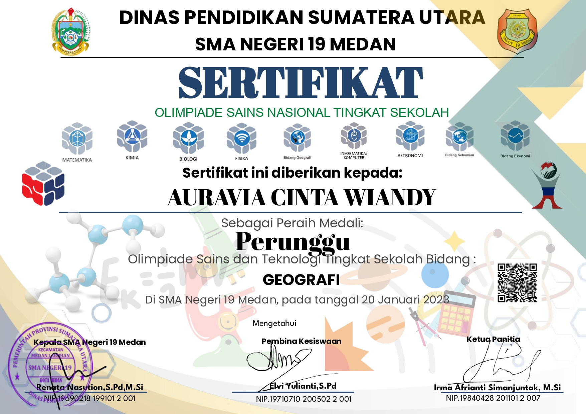
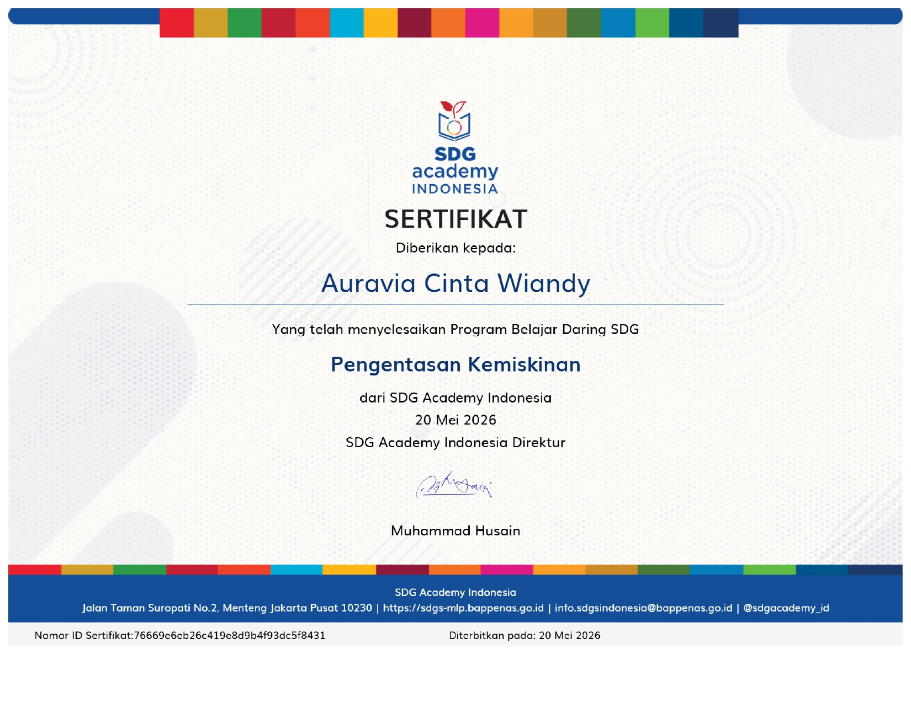
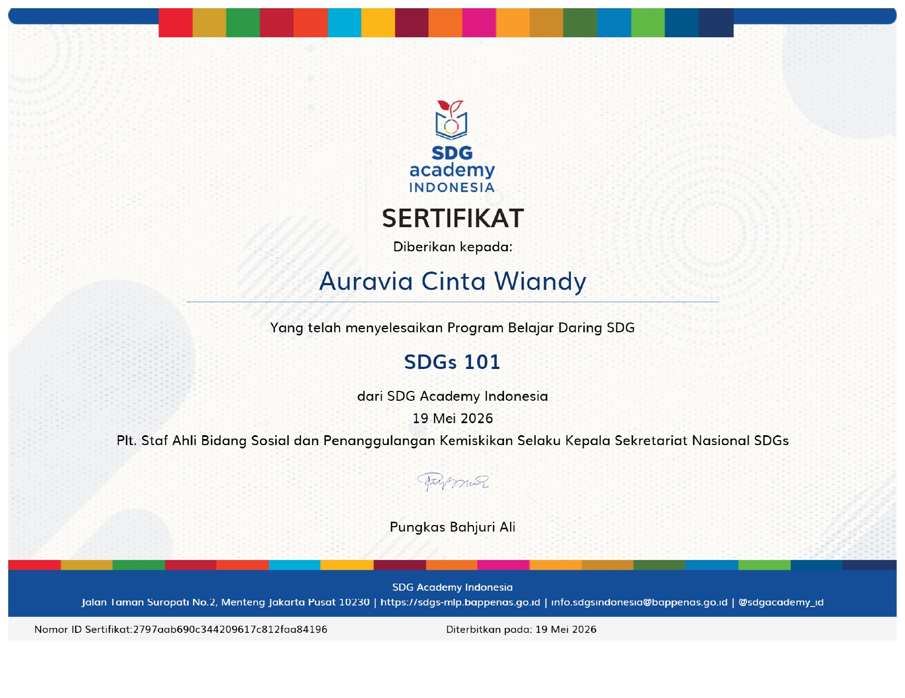
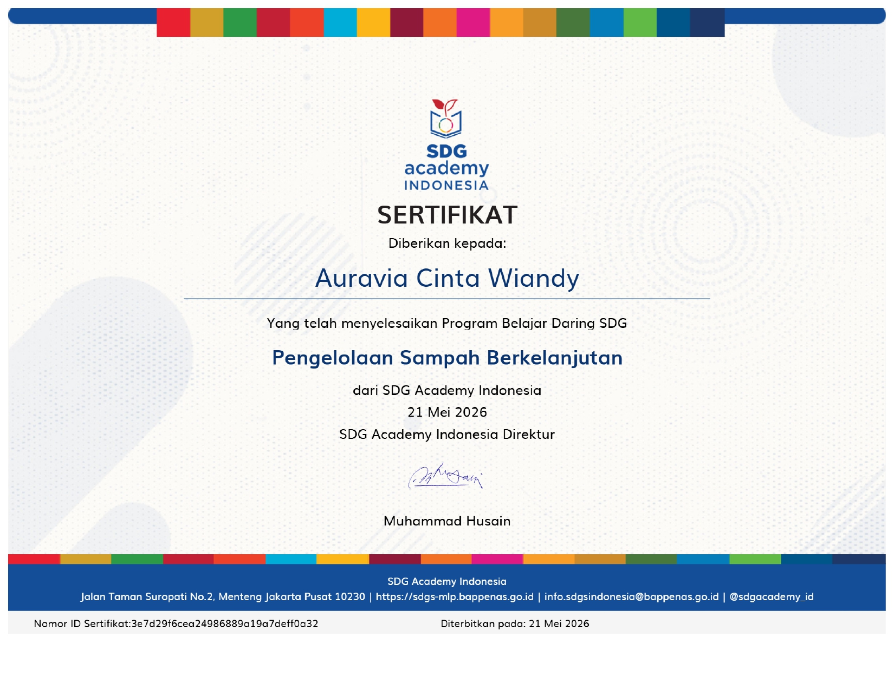

Auravia Cinta Wiandy
Berfokus pada Perancangan Web, Pengelolaan Database, dan Digitalisasi Layanan.
Tentang Saya
Halo! Saya seorang mahasiswa aktif jurusan Informatika yang memiliki ketertarikan besar dalam bidang Perancangan Web dan Pengelolaan Database. Selain aktif dalam dunia akademik, saya memiliki pengalaman kerja nyata sebagai Staf Operasional Agen BRILink yang bertanggung jawab dalam administrasi keuangan harian, pelayanan pelanggan, dan pengelolaan transaksi. Saya juga memiliki pengalaman kerja di lingkungan industri manufaktur yang membentuk kedisiplinan, ketahanan kerja, dan kepatuhan terhadap prosedur. Perpaduan antara pengetahuan teknologi informasi dan pengalaman profesional tersebut membentuk visi saya untuk berkontribusi dalam digitalisasi layanan publik melalui pengelolaan teknologi informasi yang efisien, aman, dan transparan.
Pengalaman Kerja
Agen BRILink Firman
September 2024 – SekarangStaf Administrasi & Operasional
- Mengelola transaksi keuangan harian nasabah meliputi transfer, penarikan tunai, pembayaran tagihan, dan setor tunai secara akurat.
- Melakukan rekonsiliasi kas harian dan menyusun laporan keuangan sederhana untuk memastikan saldo fisik sesuai dengan sistem.
- Memberikan pelayanan yang ramah dan solutif kepada nasabah untuk membangun kepercayaan serta loyalitas pelanggan.
- Berhasil menjalankan tanggung jawab pekerjaan dengan performa yang konsisten sambil aktif menempuh pendidikan perguruan tinggi.
PT Rima Ribu Indonesia
November 2024 – Agustus 2025Operator Produksi (Pabrik Mainan)
- Mengoperasikan mesin perakitan dan pencetakan komponen mainan sesuai target produksi harian perusahaan.
- Melakukan quality control pada produk akhir untuk memastikan tidak ada cacat produksi sebelum proses pengemasan.
- Menerapkan standar K3 (Keselamatan dan Kesehatan Kerja) guna menjaga lingkungan kerja yang aman dan produktif.
- Berhasil mencapai target output harian secara konsisten dengan tingkat defect rate di bawah 1%.
Keahlian Teknis
🌐 Perancangan Web
Merancang dan mengembangkan website responsif, modern, user-friendly, serta mendukung digitalisasi sistem informasi.
🗄 Database Management
Memahami pemodelan data, relasi tabel, query SQL, dan pengelolaan basis data terintegrasi.
💰 Administrasi Keuangan
Pengelolaan transaksi, rekonsiliasi kas, pembukuan sederhana, serta pelayanan pelanggan.
Soft Skills
⏳ Manajemen Waktu
Teruji dalam membagi fokus antara aktivitas akademik dan pekerjaan secara profesional.
✔ Ketelitian & SOP
Terbiasa bekerja dengan akurasi tinggi, disiplin, serta patuh terhadap prosedur operasional.
Sertifikasi





Visi Karier
Menjadi Pengelola Teknologi Informasi di instansi pemerintahan yang mampu mendukung transformasi digital melalui pengelolaan data yang efisien, aman, dan transparan.